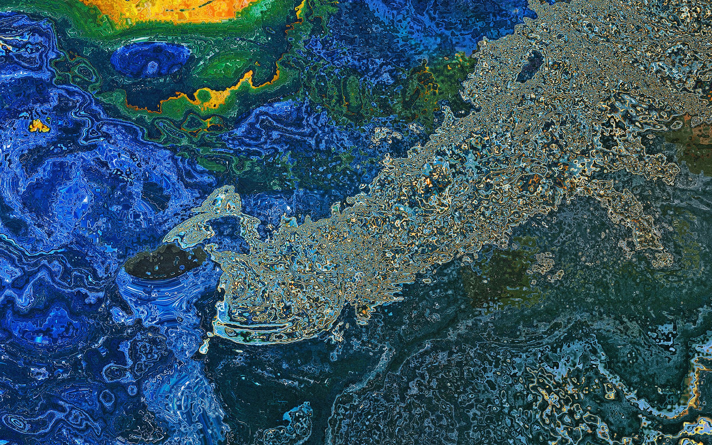
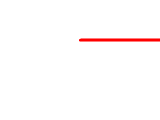

Image Processing
Chaos theory / photography / image transformation

Processed Original
Original
Image Processing Based on Chaos Theory
Chaos theory is a branch of mathematics focusing on the behavior of dynamical systems that are highly sensitive to initial conditions.
Here every output pixel is a pure function of that same input pixel's color, with no reference to its neighbors. Nothing is invented or hallucinated; the information was always in the file.
Which means the aesthetic is feeding on source's noise. Those gold filigree textures in the water are amplified JPEG blocking and sensor grain, promoted to full-range color by a 20× multiplier.
